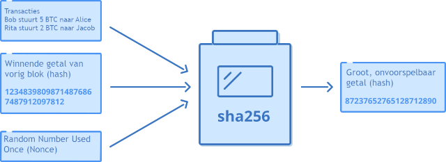

5 Het grootboek beveiligen
We hebben besproken hoe we erin slagen om kopieën bij te houden van, en te schrijven naar een gedistribueerd grootboek dat zonder dwang of corruptie werkt. We doen dit met behulp van een loterij en op basis van validatie door consensus.
Maar wat gebeurt er wanneer een loterijwinnaar besluit om zich kwaadwillig op te stellen? Kan een miner historische boekingen in het grootboek aanpassen? Kunnen onze kwaadwillige actoren Eva, Davy en Femke samenspannen en de geschiedenis herschrijven of rekeningsaldi wijzigen en zichzelf meer munten toekennen?
In dit deel gaan we de blockchain bespreken. Eigenlijk is het louter een marketingterm die de technologiesector binnengedrongen is. In bitcoin worden blokken aan elkaar gehecht om een duidelijk link van de ene transactie naar de volgende te behouden. Een ketting van blokken, een blockchain, dus. Hierdoor ontstaat een lineaire geschiedenis van creatie en uitgaven sinds Satoshi’s genesis block in 2009 tot op vandaag.
In het vorige deel hebben we een klein beetje gelogen om het eenvoudig te houden. Wanneer je meespeelt met de loterij (om te minen), is het niet enkel de wachtende transacties en een lukrake nonce die je hasht. Je voegt daar ook nog een hash van het blok net daarvoer toe. Op die manier ontstaat een duidelijke link tussen jouw blok en het vorige.
Herinner je dat de output van een hash-functie onvoorspelbaar is en afhankelijk is van alle inputdata die je gebruikt. De hashes van ons blok bevat nu drie verschillende inputs:
De transacties die we naar het grootboek willen schrijven
Een lukrake nonce
Een hash van de vorige blok die we gebruiken als basis voor de geschiedenis van ons grootboek.

Dit stelt ons in staat om een historisch overzicht van elk blok te bouwen tot en met het eerste blok, ontgonnen door Satoshi. Wanneer we een nieuw blok aan de ketting toevoegen, moeten we valideren dat het geen transacties bevat die bitcoins uitgeven die in het verleden al een gespendeerd zijn.
Wanneer ook maar iets verandert in de inputs van de hash, zal de output van de hash drastisch en onvoorspelbaar anders zijn. Als je probeert de data uit een oud blok te manipuleren, zal je ook de resulterende hash veranderen. Aangezien die hash ook werd gebruikt in de input voor de blokken die daar net na kwamen, zal je ook de hashes van die blokken veranderen. De hash van de laatste blok in de ketting, die gelinkt is met alle voorgaande, doet dienst als een vingerafdruk voor de volledige geschiedenis van het grootboek tot op dat moment.
Het is onmogelijk om vals te spelen bij proof-of-work omdat iederen weet hoeveel energie gebruikt moet worden per blok om het vereiste doelnummer te vinden. Mocht iemand willen proberen om een oudere blok in de ketting aan te passen, zouden ze de proof-of-work hash moeten aanpassen van de blok waar ze mee knoeien én die van alle andere blokken die daarna komen. De blockchain is niet alleen fraudebestendig, het is ook enorm duur om het te proberen.
Iedere nieuwe blok die gevonden wordt draagt effectief bij aan de veiligheid van alle blokken die ervoor kwamen omdat het de hoeveelheid elektriciteit die nodig is om de proof-of-work hashes voor de ketting tot op dat punt te herschrijven, verhoogt. Een transactie in een blok, begraven onder 6 opeenvolgende blokken wordt aanzien als finaal door de meeste handelaars. Het zou namelijk een aanzienlijke hoeveelheid energie kosten om de laatste 6 blokken opnieuw te hashen met de hash-rate van vandaag. Een transactie die 100 blokken diep zit? Vergeet het maar.
Wanneer je een kopie van de blockchain downloadt, is elke transactie in elke blok volledig transparant. Je kan de proof-of-work hashes zelf controleren om zeker te zijn dat niets aangepast werd door de persoon die jouw het grootboek bezorgde.
Wanneer blokken botsen
Er ontbreekt nog een element in het consensus-systeem: hoe zorgen we dat iedereen met dezelfde lineaire geschiedenis van transacties werkt wanneer miners tegelijk twee blokken vinden en ze naar iedereen uitsturen?
Stel je voor dat we nu een wereldwijd netwerk draaien. Mensen van over heel de wereld, van de VS tot China, zijn allemaal aangesloten bij dit globale netwerk en ze spelen allemaal mee met de proof-of-work mining loterij.
Iemand in Chicago vindt een geldig blok. Ze deelt het resultaat met het netwerk en alle computers in de VS accepteren het. Tegelijk vindt iemand in Shanghai een paar seconden later ook een blok. De buren van die vinden hebben nog niets vernomen van het blok uit Chicago. Ze accepteren het Chinese voorstel.
Beide blokken bevatten een transactie van 1 bitcoin van Alice naar Bob. Onmiddellijk na ontvangst stuurt Bob het bedrag opnieuw door naar Charles. Wegens het verschil in timing reflecteert het blok uit de VS deze situatie en Bob saldo van nul. Echter, de Chinese speler vond een oplossing en publiceerde een blok voordat Bob’s transactie naar Charles bekend was. Het blok uit China toont een saldo voor Bob van 1 bitcoin.
Het netwerk is nu verdeeld. Het is onduidelijk welke versie van het grootboek juist is, aangezien beide versie geldige transacties bevatten die correct gelinkt zijn met alle voorgaande transacties. De twee versie bevatten een geldige hoeveelheid proof-of-work. Dit noemen we een chain split (splitsing van de ketting). Je kan geen centrale autoriteit raadplegen om uit te maken welke versie wint. Hoe pakken we dit aan?
Bitcoin biedt een eenvoudige oplossing: gewoon afwachten. Het staat de miners vrij om te kiezen welk blok ze willen kiezen als basis om verder op te werken. De Amerikanen zullen minen om verder te bouwen op het eerste blok waar zij van hoorden en de Chinezen bouwen verder op hun versie.
In de volgende tien minuten wordt opnieuw een blok gevonden. De code van bitcoin stipuleert dat diegene die de meeste energie gebruikt heeft voor alle blokken in hun ketting wint. Deze cruciale spelregel vraagt ons om het totale verrichte werk in een ketting te sommeren en de voorkeur te geven aan de “zwaarste”, cumulatieve proof-of-work ketting. Dit principe noemen we Nakamoto Consensus, ter ere van Satoshi.
Stel dat een Chinese miner opnieuw een volgend blok wint. Hun ketting is nu één blok verder dan de Amerikaanse en bevat meer totale proof-of-work. Wanneer ze deze bevinding meedelen aan de rest van het netwerk, realiseren de spelers in de VS zich dat de Chinese nodes een ketting geproduceerd hebben waar harder aan gewerkt is. Ze zien hun “foutje” onmiddellijk in en herorganiseren zich. Dit betekent dat zij hun laatste blok alsnog verwerpen en de twee blokken uit China opnemen in hun grootboek.

Het blok uit de VS wordt nu een zogenaamd wees-blok (orphan block). Aangezien het alsnog werd verworpen, gaat de beloning voor de vinden verloren en de transacties uit dat blok worden niet in het grootboek geregistreerd. De verworpen transacties zijn niet verloren. Sommige werden misschien ook opgenomen in het blok uit China en de rest kan uiteindelijk in een toekomstig blok alsnog in het grootboek geschreven worden.
Alle onbevestigde transacties worden door miners lokaal bijgehouden op hun computer in een mempool. Elke transactie uit een verworpen blok komt terug in de mempool terecht. Ze worden vervolgens door iemand anders in een blok geplaatst, zolang er geen conflict is met de nieuwe geschiedenis van het grootboek vastgelegd in het laatste blok.
Hoewel we in dit voorbeeld naar de nodes refereren als zijnde Amerikaans of Chinese, weten nodes in realiteit niets over elkaars identiteit of geografische locatie. Het enige bewijs van validiteit dat ze nodig hebben, is dat iemand de zwaarste, cumulatieve proof-of-work ketting heeft en dat de transacties in die ketting zelf allemaal geldig zijn (geen dubbele-uitgaven).
Dit soort splitsingen van de ketting zijn vrij normaal en gebeuren af en toe in bitcoin. Doorgaans wordt opnieuw consensus bereikt in het volgend blok. Verbeteringen in technologie van bekendmaking van blokken en verhoogde netwerk-connectiviteit maken dit probleem mettertijd minder groot. Op vandaag, en hoogstwaarschijnlijk voor de nabije toekomst, heeft bitcoin een harde limiet op de hoeveelheid data dat toegelaten wordt in een blok. Een deel van de reden dat bitcoin, iedere tien minuten, relatief kleine blokken produceert, is om te verzekeren dat orphans erg zeldzaam zijn.
Minen is een spel van kansen. Soms liggen blokken tien minuten uiteen, maar andere keren slechts enkele seconden. Indien we om de paar seconden blokken zouden produceren, of indien we erg grootte blokken zouden hebben, zou de kans groter zijn dat Amerikaanse en Chinese blokken conflicteren. Ze liggen ver uiteen en het duurt langer om elkaar te bereiken. Als orphans te veel voorkomen, zou de ketting ontrafelen. We zouden orphan na orphan zien verschijnen en nodes zouden de tijd niet hebben om uit te maken welke nu het laatste, juiste blok is.
Het is belangrijk om blokken klein te houden om de kans te vergroten dat het hele netwerk de laatste blok kan ontvangen vooraleer te beginnen aan een volgende loterij. De andere, wellicht belangrijkste reden, is dat kleine blokken ook de vereisten qua hardware voor het draaien van een node relatief laag houden. Zo blijft het de moeite om aan te sluiten bij het netwerk en blijft mining meer verspreidt over tijd. Grote blokken zouden miners aanzetten om zich te vestigen in datacenters in gekende geografische locaties om splitsingen, die slecht zijn voor hun rendabiliteit, te vermijden
De enige, echte ketting
Laten we terugkeren naar ons voorbeeld uit hoofdstuk 3 waarin Henri voor het eerst aansluit bij het bitcoin netwerk.
De node van Henri zal een connectie maken met enkele andere nodes op het netwerk. Vervolgens vraagt hij die om nog andere nodes die zij kennen en maakt ook daar verbinding mee. Dit heet node discovery.
Sommige van die nodes zullen slechte bedoelingen hebben en valse kopieën van het grootboek bezorgen. Ze kunnen bijvoorbeeld ongeldige handtekeningen voor transacties bevatten, of vervalste en oneerlijk ontgonnen bitcoin die geen geldige proof-of-work hashes hebben. Al die versies zullen onmiddellijk verworpen worden en de afzenders worden door de node van Henri verbannen.
Andere nodes zullen wel eerlijk zijn, maar conflicterende versies van de waarheid hebben. Misschien ging een net offline en loopt hij nog enkele blokken achter. Wanneer hij verschillende kopieën van de blockchain download die allemaal geldig zijn, zal de software gebruik maken van Nakamoto Consensus. Door te meten wat het totale, cumulative proof-of-work is, weet Henri onmiddellijk welke de zwaarste ketting is die wordt aanzien als de enige echte.
Nodes spreken voortdurend met elkaar om zeker te zijn dat ze het meeste recente blok hebben. Aangezien alle nodes de regel van de zwaarste ketting volgen, is er consensus over wat de ware staat van het grootboek is. Henri moet niet vertrouwen op een meerderheid van stemmen. Dit systeem zou makkelijk te bedriegen vallen door een grote hoeveelheid nodes te draaien die kwaadaardig zijn.
Zelfs als Henri met verschillende verouderde of kwaadaardige nodes en slechts 1 correcte node connecteert, dan zou de bitcoin-software weten welke de juiste versie is. Die versie bevat de grootste hoeveelheid proof-of-work en bevat geldige transacties helemaal tot aan de genesis block. Het belang hiervan kan niet genoeg benadrukt worden. Henri moet niemand vertrouwen; de software op zijn computer zal alle validaties uitvoeren die nodig zijn om zeker te zijn dat de blockchain waar hij mee werkt de enige juiste is.
Het is daarom uiterst moeilijk voor hackers om een node een valse kopie van de ketting te bezorgen. Om dat te doen zou je alle eerlijke connecties moeten kunnen uitsluiten en het doelwit enkel laten verbinding maken met je eigen, kwaadaardige nodes.
Omkeerbaarheid van transacties
Doorgaans ontstaan concurrerende versies van het grootboek per toeval en wordt snel uitgeklaard welke de juiste versie is. Maar iemand die het netwerk wil aanvallen kan gebruik maken van Nakamoto Consensus door meer dan 50% van de totale hash-rate te beheren. Op die manier kunnen ze de zwaarste, cumulatieve proof-of-work ketting produceren. Die versie van het grootboek zal transacties bevatten die de aanvaller kiest, zolang ze genoeg energie willen verbruiken om de aanval door te zetten. Wanneer ze deze ketting bekendmaken aan het netwerk, zouden andere nodes hem accepteren als zijnde de echte. Die heet een 51%-aanval, omdat je meer dan de helft van alle rekenkracht op het netwerk nodig hebt om de aanval succesvol uit te voeren.
Het is belangrijk om te begrijpen dat er geen echte finaliteit van transacties is in bitcoin, aangezien 51%-aanvallen of orphan blocks altijd tot de mogelijkheid behoren. Ontvangers van transacties wachten typisch tot enkele blokken boven op hun transactie werd gemined. Wanneer de hoeveelheid energie die nodig zou zijn om de ketting te herschrijven hoog genoeg is, wordt het erg onwaarschijnlijk dat de transactie ongedaan wordt gemaakt en beschouwen de deze transfer als finaal.
Blokken die ontgonnen worden boven op een blok waar onze transactie in zit, noemen we doorgaans confirmaties. Dus wanneer iemand zegt dat een bitcointransactie 6 confirmaties heeft, wordt bedoeld dat er 6 blokken gepasseerd zijn sinds de transactie in het grootboek zit. Wanneer je als handelaar een digitaal product verkoopt met geringe marginale kosten, kan het voldoende zijn met slechts 1 confirmatie of zelfs zonder confirmaties. Je stuurt de download link zodra de transactie aangekondigd werd op het netwerk. Wanneer je een huis verkoop, kan het misschien meer aangewezen zijn om te wachten op 12 confirmaties. Dat kost gemiddeld zo’n twee uur aan mining. Hoe langer je wacht, hoe meer proof-of-work boven op het blok met jouw transactie komt. Het wordt veel duurder om de transactie om te keren. Vandaag accepteren de meeste mensen een transactie met 6 confirmaties.
Moest de hash-rate van bitcoin in belangrijke mate dalen, wat betekent dat minder energie ieder blok beveiligd, dan kan je altijd het aantal confirmaties verhogen vereist voor een “finale afwikkeling”. Hoewel de niet-finaliteit van transacties op het eerste zicht verontrustend lijkt, is het belangrijk om in het achterhoofd te houden dat transacties met kredietkaarten tot wel 120 dagen later kunnen worden teruggedraaid.
Aan de andere kant, zijn bitcointransacties na een paar blokken zo goed als onomkeerbaar. Vanuit dit oogpunt, is de omkeerbaarheid en finaliteit van bitcoin een ontzettende verbetering met de meeste traditionele betalingsnetwerken, althans voor de handelaar.
Op vandaag wordt geschat dat iemand met de energie van het volledige bitcoin netwerk ter beschikking – een serieuze uitdaging, aangezien je toegang tot de energie van een klein land én alle gespecialiseerde hardware moet hebben – nog altijd meer dan een jaar zou nodig hebben om de volledige geschiedenis van de chain te herschrijven. Je kan deze data bekijken op https://bitcoin.sipa.be/
Footnote: dit interessante artikel gaat dieper in op ongeldige blokken in bitcoin: https://hackernoon.com/bitcoin-miners-beware-invalid-blocks-need-not-apply-51c293ee278b